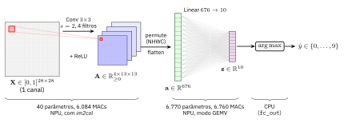
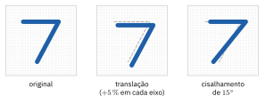
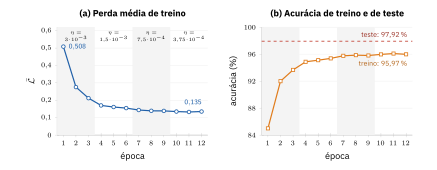
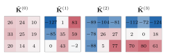
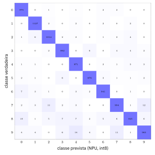

Estudo de caso: CNN para o MNIST¶
Para avaliar a NPU em uma aplicação completa, uma rede convolucional foi treinada para classificar os dígitos manuscritos do MNIST e executada no SoC RISC-V na FPGA. Esta página reúne o modelo, a quantização, o mapeamento das camadas no arranjo e as medições na placa.
Arquitetura da solução¶
No hospedeiro, um cliente em Python treina a rede, converte os parâmetros para inteiros e os envia uma única vez ao SoC pela UART (8.216 bytes). O SoC, a 100 MHz, reúne o núcleo RISC-V, memória, UART a 921.600 bit/s, um controlador de DMA e a NPU. A cada inferência, a interface reduz o dígito desenhado a uma imagem \(28\times28\) de inteiros e a envia ao SoC (784 bytes). O firmware repassa a imagem crua à NPU, que monta as janelas \(3\times3\) e calcula a convolução e a camada densa, e a CPU devolve os 10 logits e acende o LED do dígito previsto.

cnn_server.c.Modelo¶
O modelo aplica quatro filtros \(3\times3\) com passo 2 e a ReLU, gerando quatro mapas de \(13\times13\), e em seguida uma camada densa que leva as 676 ativações aos 10 logits. A convolução tem menos de 1% dos parâmetros, mas quase metade do custo, justamente por reaproveitar 36 pesos em 169 posições.
class Conv2D_Model(nn.Module):
def __init__(self):
super().__init__()
self.conv = nn.Conv2d(1, 4, kernel_size=3, stride=2, padding=0)
self.relu = nn.ReLU()
self.flatten = nn.Flatten()
self.fc = nn.Linear(13 * 13 * 4, 10)
def forward(self, x):
x = self.relu(self.conv(x))
x = x.permute(0, 2, 3, 1) # NHWC: ordem de saída da NPU
return self.fc(self.flatten(x))
Um detalhe do código decorre diretamente do hardware: a linha permute. Por padrão, o PyTorch guarda os mapas um após o outro, primeiro todo o mapa do filtro 0, depois o do filtro 1, e assim por diante. A NPU, porém, devolve os resultados pixel a pixel, com os quatro filtros de cada pixel juntos. O permute coloca os dados nessa mesma ordem (NHWC) antes do achatamento, de modo que a camada densa é treinada já na ordem em que o hardware entrega as ativações, e o firmware não precisa reordená-las.

| Camada | Saída | Parâmetros | MACs |
|---|---|---|---|
| Conv \(3\times3\), \(s=2\), \(1\to4\) | \(4\times13\times13\) | \(36+4=40\) | \(169\cdot4\cdot9=6.084\) |
ReLU, permute, flatten |
676 | — | — |
| Linear \(676\to10\) | 10 | \(6.760+10=6.770\) | 6.760 |
| Total | 6.810 | 12.844 |
Treinamento¶
A rede é treinada com as 60.000 imagens de treino do MNIST, com pixels normalizados para \([0,1]\), em 12 épocas com lotes de 32 imagens. O Adam parte de uma taxa de aprendizado de \(3\times10^{-3}\), reduzida à metade a cada três épocas. Para que a rede aprenda a reconhecer dígitos que nunca viu, usa-se aumento de dados: a cada apresentação, a imagem é levemente deslocada (até \(\pm1{,}4\) pixel) e inclinada (até \(15^\circ\)), como acontece quando alguém desenha na interface.

A perda média de treino cai de 0,508 na primeira época para 0,135 na última, com quedas visíveis a cada redução da taxa de aprendizado. A acurácia final de treino (95,97%) fica abaixo da de teste, o que se explica pelo aumento de dados: as imagens de treino são deformadas, as de teste não.

Quantização e acurácia¶
A NPU usa \(M=1\) e \(S=8\) nas duas camadas, ou seja, divide sempre por 256. Para cada camada, o cliente escolhe a maior escala de pesos que respeite duas condições: o maior peso, em módulo, vira no máximo 127, e o maior resultado observado em 32 imagens de calibração vira no máximo 120 depois da divisão (ver Quantização para INT8).
As escalas se encadeiam ao longo da rede. A imagem chega multiplicada por cerca de 127, pois cada pixel \(p\), de 0 a 255, é enviado como \(\lfloor p/2\rfloor\). Na convolução, os filtros trazem o fator \(s_1\) e a PPU divide por 256, de modo que cada ativação inteira equivale à ativação real multiplicada por um fator conhecido; a camada densa repete o processo com \(s_2\). No fim, cada logit inteiro é aproximadamente o logit real multiplicado por uma mesma constante positiva, \(\alpha\), e a rede quantizada escolhe o mesmo dígito que a original; os arredondamentos só podem mudar a decisão quando os dois maiores logits estão quase empatados.
As duas camadas se comportam de forma diferente. Na convolução, a escala foi limitada pela faixa dos pesos, e os filtros inteiros ocupam a faixa \([-127, 83]\), aproveitando bem os 256 níveis; nenhuma ativação de teste saturou. Na camada densa, a escala foi limitada pela margem de ativação: os logits reais chegam a 32,5, e, para que coubessem em 8 bits depois da divisão por 256, a escala dos pesos teve de ser reduzida. Os pesos inteiros ficaram em \([-62, 43]\), menos da metade dos níveis disponíveis.

| Configuração | Acurácia (10.000 imagens de teste) |
|---|---|
| Rede original, em ponto flutuante | 97,92% |
| Rede original, com a entrada já em 7 bits | 97,91% |
| Rede INT8, emulação bit a bit da NPU | 97,79% |
A quantização quase não afeta a acurácia: quantizar a rede inteira custa 0,13 ponto percentual. Mais do que isso, as duas redes decidem igual imagem a imagem: concordam em 99,69% das imagens, divergindo em apenas 31. Essas divergências ocorrem quando os dois maiores logits estão quase empatados: um passo do logit inteiro vale cerca de 0,27 unidade do logit real, e duas classes mais próximas que isso podem receber o mesmo valor inteiro; é o caso de 18 das 31 divergências, que o firmware desempata escolhendo o menor índice. A matriz de confusão mostra que os erros restantes se concentram em pares de dígitos de formas parecidas.

Requantização por camada
Usar o mesmo divisor nas duas camadas simplifica o firmware, mas obriga a reduzir a escala dos pesos da camada densa. Como a PPU aceita \(M\) e \(S\) programáveis, calcular um par \((M,S)\) para cada camada permitiria usar a faixa inteira do INT8 sem alterar o hardware.
Execução no SoC¶
Cada camada é alocada no arranjo como descrito em Mapeamento de camadas: a convolução em 43 passagens de \(K=9\), com 98% das MACs úteis, e a camada densa em três passagens GEMV de 169 passos, com 83%. O que se repete entre passagens define como o firmware alimenta a NPU, e quase nada precisa trafegar a cada imagem:
- Carga do modelo: os pesos das duas camadas e os vieses ficam residentes na NPU, e o firmware monta, uma única vez, o programa de descritores que configura e dispara as duas camadas.
- A cada imagem: a CPU recebe os 784 pixels pela UART e dispara duas transferências de DMA: o programa, para o processador de comandos, e a imagem crua, para a unidade de im2col.
- Convolução: um único disparo executa as 43 passagens, relendo os pesos a cada uma e encadeando-as sem esvaziar o arranjo; o cálculo começa enquanto a imagem ainda chega. A saída, já na ordem NHWC, é gravada direto na memória de entradas da NPU.
- Camada densa: a lógica se inverte: as 169 palavras de entrada são relidas a cada bloco, e o ponteiro dos pesos avança para o bloco seguinte, cada um com o seu vetor de viés.
- Resultado: a CPU lê as três palavras com os 10 logits na porta de saída, sem consultar o estado da NPU, e calcula o \(\arg\max\).
A NPU executa a rede inteira em 1.506 ciclos (15 µs a 100 MHz), ou 8,5 MACs úteis por ciclo. Executada apenas na CPU, a mesma rede levaria cerca de 80 ms: uma diferença de mais de três ordens de grandeza.
Medições na placa¶
Na placa, 100 imagens de teste foram executadas com os mesmos pesos da emulação. Os logits devolvidos pelo SoC coincidiram byte a byte com os da emulação nas 100 imagens, e 99 foram classificadas corretamente: a emulação reproduz fielmente o hardware.
Uma inferência completa, do envio da imagem à chegada dos logits, leva 9,2 ms. Com a configuração padrão do conversor USB-serial da placa, a medida sobe para 15,9 ms, porque o conversor retém respostas curtas por até 16 ms. Do total:
| Etapa | Tempo |
|---|---|
| Transmissão serial da imagem e dos logits | 8,6 ms |
| CPU: escolher o dígito e enviar os logits (quase todo esperando a UART) | cerca de 0,1 ms |
| Cálculo da rede na NPU, já incluídas as transferências por DMA | 15 µs |
| Trânsito pela USB e tempo do hospedeiro | cerca de 0,5 ms |
O sistema processa cerca de 109 imagens por segundo. O acelerador não é o gargalo: num SoC em que tudo passa por um único barramento, o que limitava a NPU era a movimentação de dados e o controle, e não o arranjo. Resolvidos esses custos, a inferência completa passa a ser dominada pela comunicação serial, e reduzir a latência agora depende de um enlace mais rápido com o hospedeiro, e não de aumentar o arranjo.
Acurácia na placa e no artigo do TCC
O artigo do TCC relata 97,2% de acurácia em 1.000 imagens de teste, medidos na própria placa. Os 97,79% acima são da emulação bit a bit nas 10.000 imagens de teste, cujos logits a placa reproduz byte a byte.